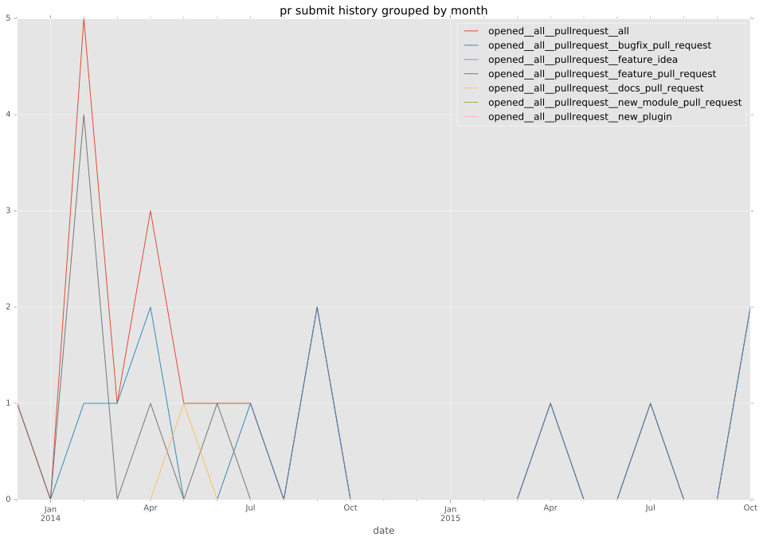
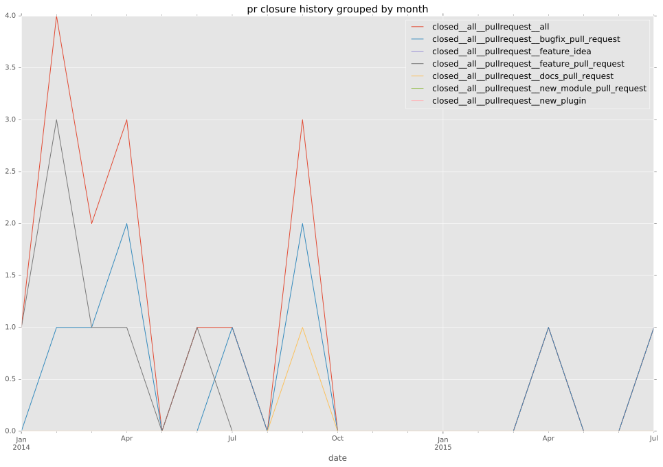

authors
- zbal
maintainers
- ansible
contributors
- mpdehaan : 5 commits
- willthames : 5 commits
- zbal : 28 commits
- mikeputnam : 1 commits
- bcoca : 3 commits
- Hypermanzer : 1 commits
- jctanner : 2 commits
- steenzout : 3 commits
- jimi-c : 4 commits
total issue counts
bugfix pull request: 11
pullrequest: 18
docs pull request: 1
feature pull request: 6
issue: 5
bug report: 5
issue history
pullrequest history



days open by issue type
feature pull request
count: 10
std: 17.6650942696
min: 0
max: 42
median: 3.5
mean: 14.5
all
count: 27
std: 29.3925683962
min: 0
max: 145
median: 1.0
mean: 12.6666666667
pullrequest
count: 0
std: nan
min: nan
max: nan
median: nan
mean: nan
docs pull request
count: 1
std: nan
min: 145
max: 145
median: 145.0
mean: 145.0
bugfix pull request
count: 13
std: 0.751067616199
min: 0
max: 2
median: 1.0
mean: 0.692307692308
issue
count: 0
std: nan
min: nan
max: nan
median: nan
mean: nan
bug report
count: 3
std: 10.6926766216
min: 2
max: 21
median: 20.0
mean: 14.3333333333
closures grouped by total days open